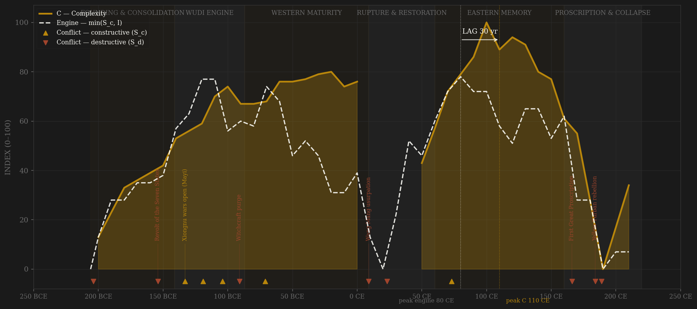
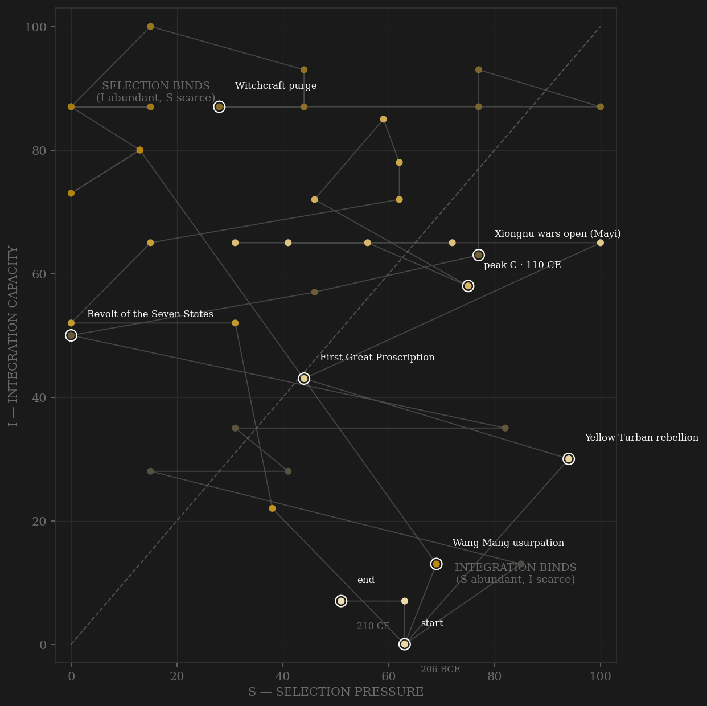

Han is the study's cleanest internal demonstration of civilizational memory — and the polity where the S_c redefinition matters most. The v1 combat-weighted engine peaks in the -100s (Wudi's Xiongnu wars) and full-dynasty complexity peaks in the 100s CE — paper, the Han Shu, Luoyang at half a million — a +220 lag spanning the Wang Mang rupture, honest but starred. Redefine selection as contestability and the story sharpens: the recruitment system IS the elite-entry channel — xianliang recommendation edicts from -178, annual xiaolian quotas -134, the Taixue growing from 50 students to thirty thousand, Zuo Xiong's written examinations of 132 CE — and it was rebuilt after the rupture in a way the great campaigns never were. The v2 engine therefore has genuine twin peaks: -130s/-140s (Wudi's open patronage market, the Xiongnu contest, court conference politics) and 70s–80s CE (recruitment at full function, Ban Chao's Western Regions pulse, the White Tiger Hall conference court). The second peak sits 30 years before the complexity crest: +30, PASS, inside the window without an asterisk. Within Western Han both definitions agree (+80 v1, +90 v2). The account still collapses on schedule: the 166/169 proscriptions bar the literati current from office — the entry channel strangled first — then office-selling replaces merit entry, Yellow Turbans tear the countryside, and Dong Zhuo's warlords end four centuries of Han in thirty years of S_d saturation. The composite preserves NaN through both collapse windows — never interpolated through the dark.

The trajectory opens mid-height on the selection axis — the Chu-Han contention and the Xiongnu at full pressure against a half-built state — then climbs the integration axis steadily for a century: commanderies replacing kingdoms after the Seven States revolt, the monopolies, the Western Regions Protectorate at the -60s integration peak. The Wang Mang rupture snaps the path toward the origin, and the Eastern Han recovery re-enters lower on both axes — coordination rebuilt to a plateau, pressure never again matching Wudi. The dynasty's last half-century is a slow slide into the S_d corner: pressure without construction, the proscriptions eating the bureaucracy that integration had built.
Coded by locus and target, never by outcome. Han supplies the classic S_c/S_d contrast pair: the Xiongnu wars — a century of external peer pressure that forced cavalry, logistics, the tribute system, and the westward reach — against the witchcraft purge of -91, which killed the heir apparent and tens of thousands inside the palace walls in the same generation. Same emperor, decomposed: Wudi's external wars are the constructive peak; his internal terror is S_d. The coding is scholar-based (CHC vol. 1, Loewe, de Crespigny) with the succession-violence file as an independent check — its Western/Eastern Han rates (0.33 vs 0.57) match the coded direction without being consulted first.
| YEAR | CONFLICT | CODE | CODING RATIONALE |
|---|---|---|---|
| 204 BCE | Chu-Han contention | Sd | Internal contest for the fallen Qin order; founding violence |
| 154 BCE | Revolt of the Seven States | Sd | Kingdoms against the center; its defeat built the commandery state |
| 133 BCE | Xiongnu wars open (Mayi) | Sc | External peer pressure for a century — the constructive backbone of the engine |
| 119 BCE | Mobei campaign | Sc | External; Wei Qing and Huo Qubing break the Xiongnu heartland |
| 104 BCE | Ferghana expedition | Sc | External reach at maximum; the western horses |
| 91 BCE | Witchcraft purge | Sd | The heir dead, tens of thousands killed inside the palace — Wudi decomposed: external wars S_c, internal terror S_d |
| 71 BCE | Xiongnu campaigns (with Wusun) | Sc | External; the pressure that yields the Protectorate integration peak |
| 9 CE | Wang Mang usurpation | Sd | The throne itself seized; civil war and the Red Eyebrows follow — NaN through the rupture |
| 23 CE | Red Eyebrows / restoration wars | Sd | Internal; Chang'an sacked twice before Guangwu restores |
| 73 CE | Ban Chao in the Western Regions | Sc | External reach briefly rebuilt; the Eastern engine's one constructive pulse |
| 166 CE | First Great Proscription | Sd | The court bans its own scholar-officials; the machine eats its bureaucracy |
| 184 CE | Yellow Turban rebellion | Sd | Millenarian rising across the plain; the countryside leaves the state |
| 189 CE | Dong Zhuo seizes the court | Sd | Warlord era: the capital burned, the emperor a hostage — terminal S_d saturation |
| COMPONENT | GRADE | BASIS |
|---|---|---|
| S — Selection (gross, frozen as Sc_v1_combat) | ○ scholar-coded | 0–3 ordinals per decade (0.55 external + 0.45 internal) from Twitchett & Loewe CHC vol. 1, Loewe, de Crespigny, Di Cosmo; succession-violence file as independent direction check (passed) — the series behind the +220 LONG* of record |
| S_c — Constructive (v2 contestability) | ○ scholar-coded | A: elite-entry competition 0.40 — DOCUMENTED DEVIATION from 'measured corpora preferred': CBDB is empty pre-Song (~57 dated Han persons, 0 dated posts), so A is coded 0–3 from the recruitment institutions themselves (xianliang edicts -178, xiaolian quotas -134 and per-population quotas 92 CE, Taixue enrollment 50→30,000, Zuo Xiong's 132 CE written exams, proscription closures, office-selling from 178; Bielenstein 1980, Loewe 2000). Weights kept at 0.4/0.3/0.3 — the channel is codable, not unmeasurable · B: external-war ordinal 0.30 HARD CAP (the existing locus-audited Sc_raw — internal violence was coded to S_d from the start) · C: within-rules political competition 0.30 (coded — Salt & Iron debates -81, Shiqu -51, White Tiger Hall 79, qingyi remonstrance; proscriptions = S_d). Ledger: data/raw/han/coding_ledger_v2.csv |
| I — Integration | ○ scholar-coded | Commandery reach, Silk Road, canal/granary, coinage standardization; silk_road.csv too thin (5 points) — informed ordinal only |
| C — Complexity | ◐ proxy support | Census anchors (2 CE = 59.6M — the famous one), Chandler/Modelski Chang'an & Luoyang, histories/paper as coded culture |
| E — Entropy | ◐ half-measured | Han rice prices from official histories (19/43 decades); troughs land on Wen-Jing, Xuandi, Ming-Zhang golden ages blind |
| CBDB | — rejected | ~830 Han persons but 0 dated office postings — below the 100-record threshold; documented and excluded |
43 decade rows (negative = BCE, Rome convention) by scripts/build_han_sicre.py; audit in components_audit.csv. Honestly graded the most hand-coded China build — the quantitative record is thin this far back, and the page says so. S_c REDEFINED 2026-07-06 per AMENDMENT_S_definition_v2.md: Sc_constructive is the contestability composite — 0.40 elite-entry competition (recruitment/recommendation-system proxy, scholar-coded: CBDB is empty pre-Song, deviation documented in build script and sources table; weights NOT reweighted) + 0.30 peer-polity rivalry (existing locus-audited external ordinal, hard cap) + 0.30 within-rules political competition (coded; coding_ledger_v2.csv), channels min-maxed 0–100 within dynasty before weighting (scripts/build_han_sc_v2.py). The prior series (gross S_selection, which the v1 page's engine ran on) is frozen alongside as Sc_v1_combat. Frozen-protocol lag under BOTH definitions: v1 engine -110 → C 110 = +220 LONG* (spans the Wang Mang rupture); v2 engine 80 → C 110 = +30 PASS — the verdict flip is shown, not hidden. Within-Western-Han both agree: +80 (v1) / +90 (v2), in-window. NaN preserved through both collapse windows (Wang Mang 10–40, post-157) rather than interpolated. Rebuild: build_han_sicre.py, build_han_sc_v2.py, then polity_report.py --slug han